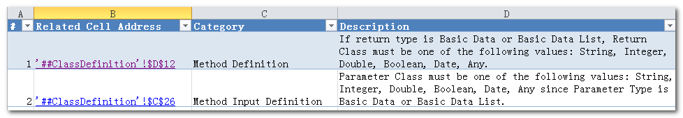

Preview your work in Excel
While you are building logic in Excel for your API, you may test and preview the result in AlchemyJ Studio directly. It is a common practice that modelers validate the API logic in AlchemyJ Studio before building the project into Java code. In some cases, the one who defines the API and the one who builds and tests the project might be different people.
Take the project in Write your first REST API as an example. After the business logic has been added, and function points have been defined, you can test the function points by clicking the Run Function Point button under AlchemyJ toolbar, and select the function point you want to run. Based on the result, you can change and debug the business logic as needed.
Another way to look for error is by running validation. Validation can be run manually by clicking validate under the AlchemyJ toolbar or it can be triggered automatically when a project is built. Validation errors will be shown in a worksheet called Validation. During project building, although it gives you an option to build the project even though there are errors detected, it is recommended to fix the errors before building the project as it may generate error result that is difficult to debug.

If validation passes (or if you choose to skip it), AlchemyJ Compiler will actually analyze and build the project. It might also detect problems in the workbook. They are logged in a log file at [AlchemyJ Installation folder]\AlchemyJ Compiler\logs.
For example, if you see the following message when AlchemyJ compiler builds the project, you should check the compiler setting from [AlchemyJ Installation Folder]\AlchemyJ Compiler\conf\setting.xml". Check whether <maven-repository-url> contains the correct path and check if you can access the URL on a browser.
2019-12-13 10:03:36.509 [main] ERROR com.axisoft.alchemyj.base.utils.SystemCmdExecUtils - Fail to execute command: [D:\AlchemyJ\AlchemyJ v2.0.14\AlchemyJ Compiler\resource\apache-maven-3.6.1\bin\mvn.cmd, clean], details: Process exited with an error: 1 (Exit value: 1)
You may also refer to Preview your first REST API to learn how to run a function point in AlchemyJ Studio.